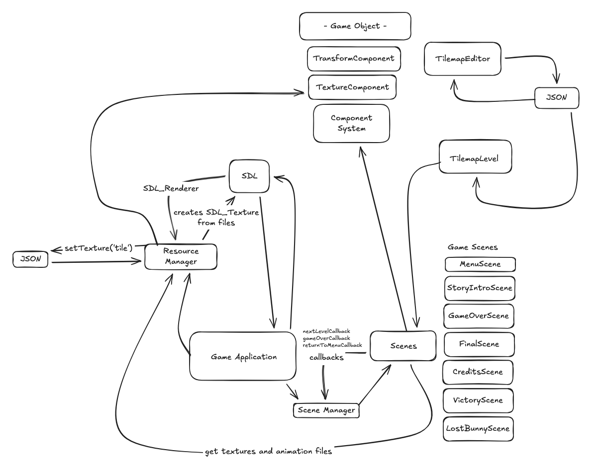

TRAILER & SCREENSHOTS
THE LOST BUNNY GAME & ENGINE ALLOWS FOR CUSTOMIZED LEVELS AND CHALLENGES IN YOUR BUNNY'S QUEST TO GO HOME! IN THIS GAME, YOUR BELOVED BUNNY HAS BEEN HIT BY A CAR AND IS NOW STRANDED IN THE SPIRIT REALM. YOUR BUNNY MUST NOW TRAVERSE THIS STRANGE WORLD, SEARCHING FOR ITS BODY TO GET BACK TO THE LAND OF THE LIVING! LEVEL LAYOUTS CAN BE CLEARED AND REDESIGNED TO ALLOW FOR CREATIVE NEW LEVELS AND DIFFERENT PLAYSTYLES.
DOCUMENTATION
FIND THE DOCUMENTATION FOR THE ENGINE HERE!
ENGINE ARCHITECTURE
THE DIAGRAM BELOW IS A GENERAL OVERVIEW OF THE ENGINE AND HOW EVERYTHING IS SET UP!
DOWNLOAD & BUILD
FIND PREBUILT BINARIES HERE:
RUNNING THE ENGINE
# CLONE THE REPOSITORY
GIT CLONE HTTPS://GITHUB.COM/FALL25BUILDINGGAMEENGINES/FINALPROJECT-LOST.GIT
CD FINALPROJECT-LOST/PSET/ENGINE
# MAKE SURE YOU HAVE DMD, DUB, AND SDL INSTALLED
# RUN PRE-BUILT GAME BINARY
./LOSTBUNNY
# RUN PRE-BUILT TILE MAP EDITOR
./TILEMAP_EDITOR
# COMPILE AND RUN TILEMAP EDITOR FROM SCRATCH
DUB BUILD --CONFIG=EDITOR
./TILEMAP_EDITOR
# COMPILE AND RUN GAME FROM SCRATCH
DUB BUILD --CONFIG=APPLICATION
./LOSTBUNNY
PLATFORM: TESTED FOR MAC
POSTMORTEM
WE WERE BOTH REALLY HAPPY WITH HOW THIS PROJECT TURNED OUT! IT WAS REALLY EXCITING TO SEE IT UNFOLD, BOTH AS AN ENGINE AND AS A GAME. THOUGH THE IDEA WAS A LITTLE MORBID, WE THINK IT HELPED IMMERSE THE USER IN THE STORY AND THE GAME.
CELESTE GREW UP MAKING SMALL PLATFORMING GAMES IN SCRATCH, AND THIS WAS HER FIRST PLATFORMER SINCE! THERE BEING ONLY A FEW MINUTES IN-BETWEEN FINISHING A DRAWING AND SEEING IT MOVE IN-GAME WAS INCREDIBLY MOTIVATING- SHE LOVED BEING ABLE TO CONTRIBUTE HER (MUCH-IMPROVED) ART.
NOAH REALLY ENJOYED APPLYING ALL OF THE CONCEPTS WE LEARNED IN CLASS TO A FINAL CUMULATIVE RESULT. HE ALSO LOVES PLATFORMERS, SO IT WAS AWESOME TO CREATE ONE THAT WENT BEYOND WHAT WE HAD PREVIOUSLY MADE IN CLASS! IT WAS VERY REWARDING TO SEE HOW EVERYTHING CAME TOGETHER AND FUN TO EXPLORE IN THIS NEW DIRECTION.
ALTHOUGH WE'RE HAPPY WITH THE RESULT, THERE ARE DEFINITELY MORE FEATURES WE WOULD LIKE TO ADD. INITIALLY, WE WANTED THE SPIRITS OF OTHER ANIMALS TO ACT AS NPCS, BOTH FRIENDLY AND DANGEROUS. THIS WAS INCORPORATED TO SOME EXTENT AS FLOATING ENEMY SPIRITS, BUT WITH MORE TIME WE WOULD HAVE LIKED TO TAKE THIS FURTHER. ADDITIONALLY, DIFFERENT REGIONS OR BIOMES WOULD HAVE BEEN REALLY INTERESTING. THE STORY AND ENVIRONMENT ARE A BIG PART OF THIS ENGINE / GAME, AND ALLOWING FOR MORE CUSTOMIZATION IN THOSE AREAS WOULD BE REALLY INTERESTING.
AS FOR THE TECHNICAL SECTIONS, WE THINK THERE WERE A FEW AREAS WHERE THE CODE COULD HAVE BEEN MADE MORE GENERIC INSTEAD OF SPECIALIZED FOR THE BUNNY GAME. FOR EXAMPLE, ANIMATION AND SCRIPTING IS CURRENTLY RENDERED IN SCENE INSTEAD OF BEING ATTATCHED TO THE PLAYER GAMEOBJECT. IT WORKS FOR OUR PURPOSES, BUT IN THE FUTURE WE WOULD LIKE TO INCORPORATE MORE SEPARATION.